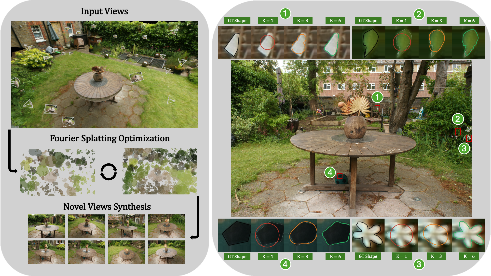
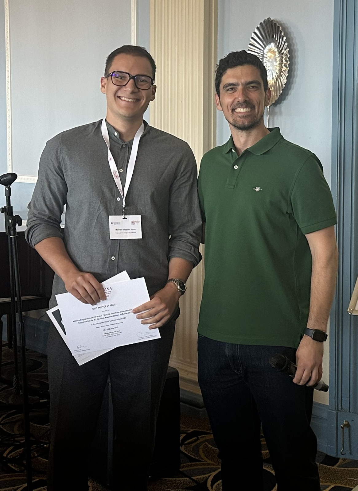
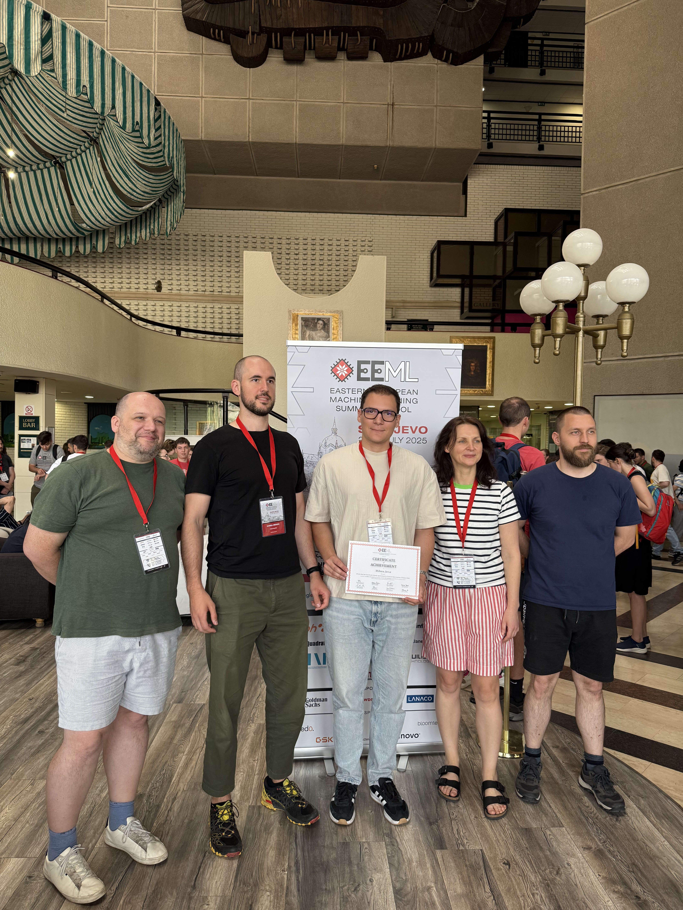
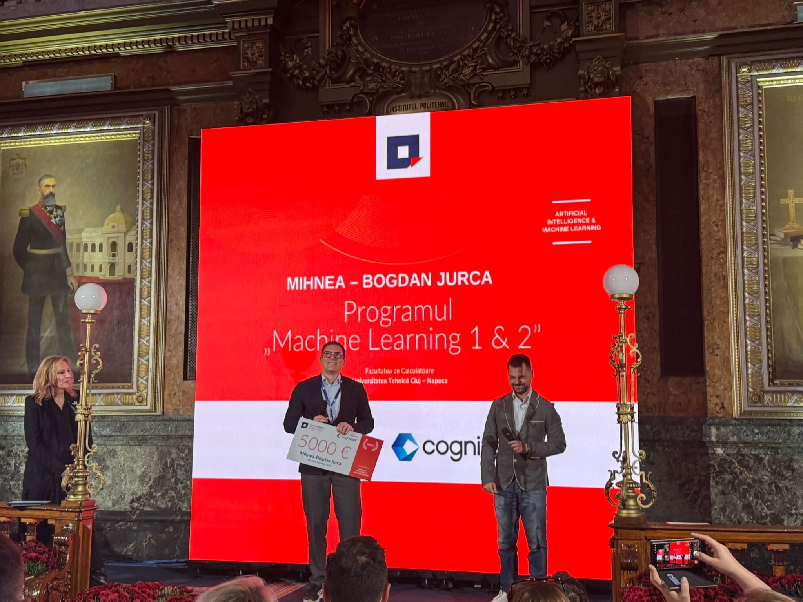

{kind=link}
Main Research Direction Publications |
|

Fourier Splatting: Generalized Fourier Encoded Primitives for Scalable Radiance Fields
Mihnea-Bogdan Jurca*, Bert Van hauwermeiren*, Adrian Munteanu Preprint 2025 We introduce the first inherently scalable primitive for radiance field rendering. By parameterizing planar surfels with Fourier encoded descriptors, a single trained model can be rendered at varying levels of detail by simply truncating Fourier coefficients at runtime. Includes HYDRA, a novel densification strategy within an MCMC framework. |
|

RT-GS2: Real-Time Generalizable Semantic Segmentation for 3D Gaussian Representations of Radiance Fields
Mihnea-Bogdan Jurca*, Remco Royen*, Ion Giosan, Adrian Munteanu BMVC 2024 The first generalizable semantic segmentation method employing Gaussian Splatting. Our method is not only superior in segmentation quality, but also achieves real-time performance of 27 FPS, marking an astonishing 901x speedup compared to the SOTA. |
Other Research |
|
Segmentation of the Retinal Vascular Network and Biomarker Quantification in OCTA Imaging
Darius-Iulian Stan, Mihnea-Bogdan Jurca, Raluca Didona Brehar IEEE ICCP 2025 This paper addresses two closely related research directions in Optical Coherence Tomography Angiography (OCTA) imaging: segmentation of the retinal vascular network and computation of vascular biomarkers. Two key modifications to the I-MedSAM architecture are introduced: a Frangi filter-based enhancement component and the SoftCLDice loss function to promote topological preservation during training. |
|
|
A Modern Approach for Positional Football Analysis Using Computer Vision
Mihnea-Bogdan Jurca, Ion Giosan IEEE ICCP 2022 A robust pipeline for the sports analysis community to extract useful information from broadcast football matches. The framework provides detection, tracking, and role identification of players and staff, as well as mapping each player from their broadcast image position to their absolute position on the field. |
Teaching |
|
Laboratory Guide for Shallow Machine Learning Concepts
A hands-on laboratory guide covering fundamental machine learning concepts, designed for university students as supplementary educational material. |
Awards and Prizes |
|

Best Poster Award
BMVA Summer School 2025 The BMVA Computer Vision Summer School consists of an intensive week of lectures and lab sessions covering a wide range of topics in Computer Vision. Lecturers are researchers in the field from some of the most active research groups in the UK and abroad. |
|

Best Poster Award
EEML Summer School 2025 The Eastern European Machine Learning (EEML) Summer School is a one-week summer school around core topics regarding machine learning and artificial intelligence. The summer school includes both lectures and practical sessions (labs) to improve the theoretical and practical understanding of these topics. The school is organised in English and is aimed in particular at graduate students, although it is open to anyone interested in the topic. |
|

ANIS Education Prize
Bursele ANIS Awarded by the Employers' Association of the Software and Services Industry (ANIS) in Romania for innovative contributions to university education. The prize was received for developing a laboratory guide and lectures on generative AI, introducing cutting-edge AI topics into the academic curriculum. |
|
|